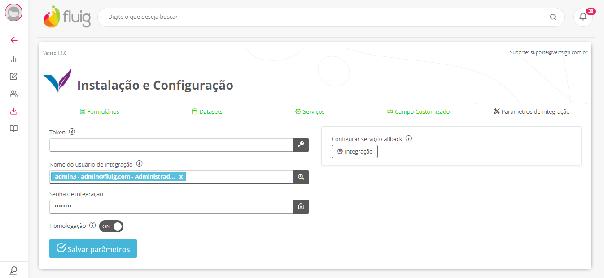
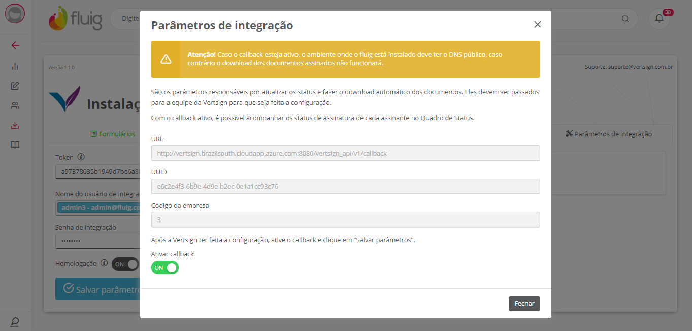
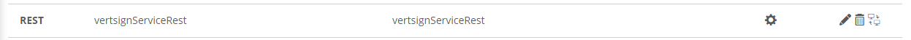
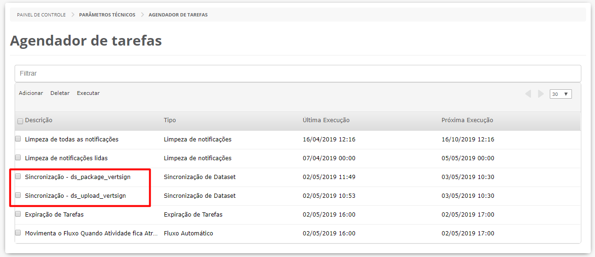
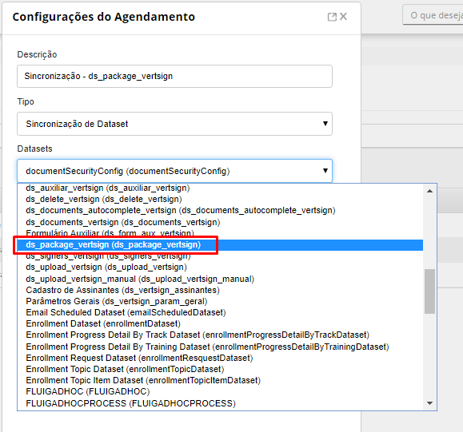
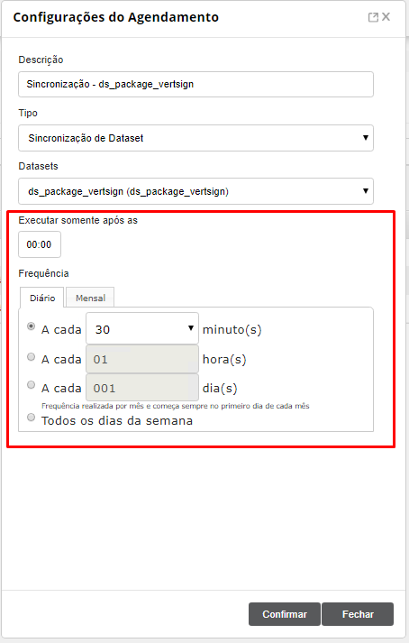
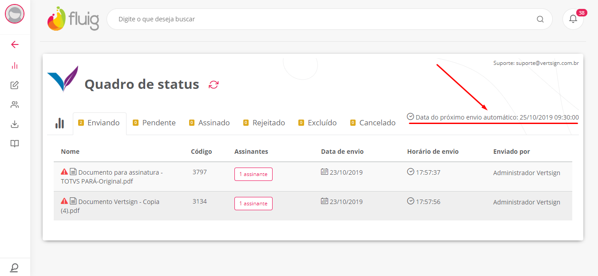
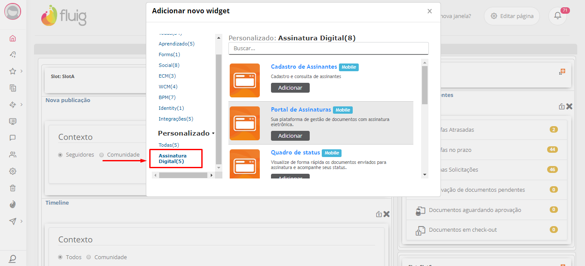
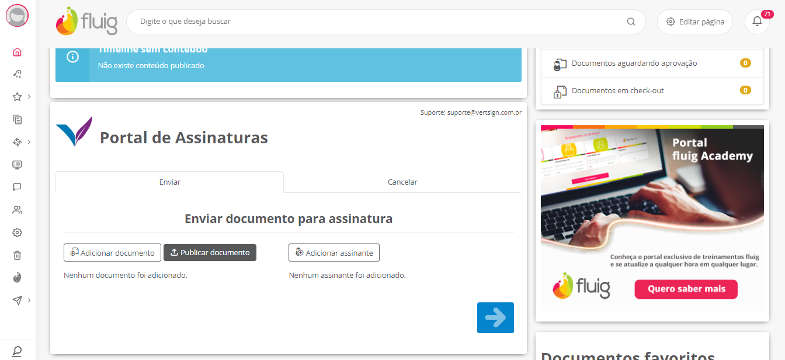
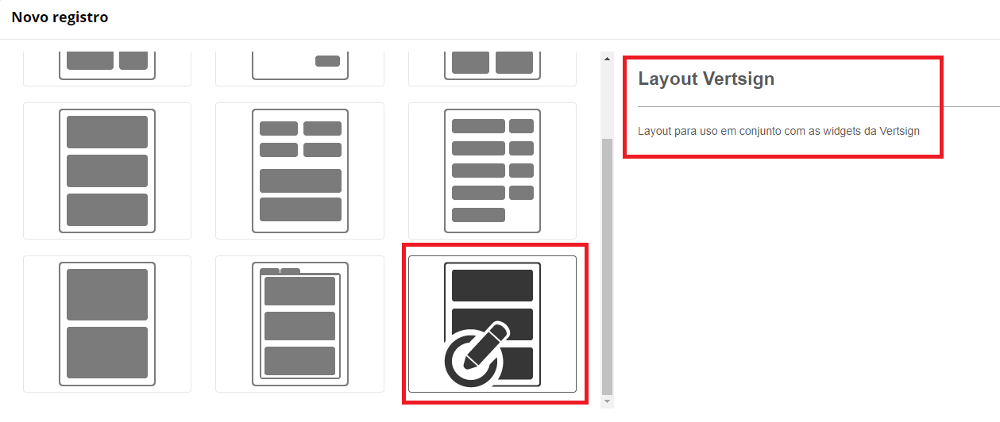

Parâmetros
Os parâmetros são obrigatórios na instalação a fim de definir todas as configurações iniciais necessárias para começar a utilizar o app. Abaixo encontra-se a descrição de cada campo.

Campos
Token
O Token é uma informação de controle de acesso no Portal de Assinaturas Certisign. Na contratação do app Vertsign dois ambientes do Portal de Assinaturas Certisign são liberados: um ambiente de homologação e um ambiente de produção. Cada ambiente possui o seu respectivo token. O Token será enviado por email pela Vertsign para o administrador do sistema cadastrado na TOTVS. Caso a empresa não tenha recebido o token, favor encaminhar um email para contato@vertsign.com.br.
Nome do usuário de integração
Usuário administrador do fluig responsável pelas integrações.
Senha de integração
Senha do usuário de integração.
Homologação
Marque esse campo caso o token utilizado seja de homologação. Todos documentos enviados para a base de homologação não possuem validade jurídica.
Mesmo estando no ambiente de produção do fluig, é possível utilizar o ambiente de homologação da Vertsign. É o token que define qual ambiente será utilizado (homologação ou produção).
Serviço Callback
É um serviço que notifica os serviços do cliente com base em alterações/eventos e foi projetado para garantir a atualização dos status, mesmo que ocorra alguma instabilidade no serviço.
Em outras palavras, ele faz a atualização instantânea dos status da assinatura do documento quando ele é assinado.
Com o callback ativo, é possível acompanhar os status de assinatura de cada assinante no Quadro de Status. Por padrão ele vem desabilitado e para ativá-lo é obrigatório informar os 3 campos ("URL", "UUID" e "Código da Empresa") para que a equipe da Vertsign (suporte@vertsign.com.br) faça a configuração no Portal da Vertsign.
Caso ele permaneça desabilitado, não será possível acompanhar os status dos assinantes e o retorno do documento assinado deve ser feito pelo Agendador de Tarefas do fluig.
Atenção!
Caso o callback seja habilitado, o ambiente onde o fluig está instalado deve ter o DNS público, caso contrário o download dos documentos assinados não funcionará.
Outro ponto importante é a inclusão do usuário integration no papel admin. Veja mais detalhes no tópico Usuário de integração.

Serviço externo
vertsignServiceRest
Após preencher todos os campos e clicar em Salvar, o formulário de parâmetros gerais será atualizado com as novas informações e o serviço vertsignServiceRest será criado no fluig.

O campo token é utilizado para realizar as integrações entre o fluig e a Certisign. O serviço vertsignServiceRest é o responsável por fazer esta integração. Caso o token seja alterado, este serviço será removido e criado novamente com o novo token.
Os endereços abaixo devem ser liberados para que as integrações sejam realizadas:
https://api-sbx.portaldeassinaturas.com.br
https://api.portaldeassinaturas.com.br

Usuário de integração
Na última etapa da instalação deve ser definido nos Parâmetros um usuário administrador para realizar as integrações internas do fluig.
Caso o fluig esteja configurado com o Identity, o campo “Senha de integração” deve ser preenchido com a senha do Identity do usuário de integração.
É recomendável utilizar um usuário exclusivo para integração para evitar eventuais quedas de sessões do fluig.
Atenção!
Caso a senha do usuário de integração seja alterada, deve-se lembrar de alterar também nos parâmetros.
Outro cuidado que deve ser tomado é caso o usuário de integração seja desativado da plataforma. Nesse caso, deve-se acessar os parâmetros do app e definir outro usuário.
Após a instalação da versão 1.1.0 da Vertsign, será criado um usuário chamado integration-1234-5678-9876-5432-X (X = código da empresa do fluig).
Ele é responsável pela autenticação no momento que o Serviço Callback é chamado.
Para que o Serviço Callback funcione corretamente, é necessário incluir esse usuário no papel admin.

Rotinas de integração
A integração entre fluig e Certisign ocorrem através de datasets sincronizados que verificam o status da assinatura dos documentos e realizam as integrações. Por padrão esses scripts são executados uma vez por dia, mas também podem ser executados manualmente acessado o Agendador de Tarefas no Painel de Controle. O fluig permite também alterar esse tempo de agendamento.
Os datasets responsáveis por realizar o envio/download dos documentos são:
- ds_upload_vertsign: Envia os documentos para assinatura.
- ds_package_vertsign: Baixa os documentos assinados.

Configurações do agendamento
Após a instalação dos datasets, as rotinas de integração serão configuradas para executar uma vez por dia. Essas rotinas são responsáveis por enviar e baixar os documentos do Portal de Assinaturas da Vertsign.
Mas existe a possibilidade de alterar a frequência de execução. Abaixo será explicado como o usuário administrador da plataforma pode realizar essa alteração:
- Acesse o Painel de Controle do fluig
- Acesse o Agendador de tarefas
- Localize as duas rotinas de integração (ds_package_vertsign e ds_upload_package)
- Selecione a rotina que deseja alterar
- Clique em Deletar
- Clique em Adicionar
- Insira uma descrição e selecione a opção "Sincronização de dataset"
- Selecione o dataset ds_package_vertsign
- Feito isso, selecione a frequência de execução e clique em Confirmar. Mais detalhes em fluig help.



Agora a rotina que baixa os documentos assinados do Portal de Assinaturas da Certisign será executada com a frequência determinada.
A data da próxima sincronização é exibida do lado superior direito do Quadro de Status como na imagem abaixo:

Integração com BPM
Após a aquisição do app, todas as funcionalidades de integração entre ECM e Certisign estarão disponíveis na plataforma. Caso haja a necessidade de implementar um processo que possui envio de documentos para assinatura, todas as funções necessárias para realizá-lo poderão ser reaproveitadas do app Vertsign. Ou seja, o componente Vertsign permite que o envio de documentos para assinatura através de um processo possa ser realizado. Para isso, é necessário seguir algumas etapas. Abaixo está detalhado um exemplo de como enviar um documento para assinatura através de um processo.
- Criar um registro no formulário Formulário Auxiliar que está localizada dentro da pasta Formulário – Vertsign
- Nesse registro deve ser inserido os seguintes campos:
- Nome Documento (nome do documento anexado ao processo)
- Cód. Documento (código do documento anexado ao processo)
- Versão Documento
- Pasta Origem (pasta onde está localizado o documento)
- Cód. Remetente (código do usuário remetente)
- Nome Remetente
- Status da Assinatura (Deixar como Enviando para assinatura)
- Data (Data em que o documento foi enviado)
- Hora (Horário em que o documento foi enviado)
- Assinantes (Array contendo todos os dados dos assinantes)
- Número da solicitação (Número da solicitação criada)
- Número da atividade (Número da atividade na qual o documento assinado será anexado)
- Feito isso, as rotinas de integração (ds_upload_vertsign, ds_package_vertsign, ds_callback_vertsign) se encarregarão de realizar as integrações com a Certisign.
Adicionar widgets em outras páginas
As widgets da Vertsign estão disponíveis para serem inseridas em outras páginas editáveis do fluig.
O exemplo abaixo mostra como incluir as widgets na página Home. As widgets estão localizadas na categoria Assinatura digital.
O layout das páginas do Vertsign também podem ser utilizados na criação de novas páginas no fluig.
Adicionando as widgets em outras páginas

Widget adicionada em outras páginas
Layout que pode ser utilizado em outras páginas